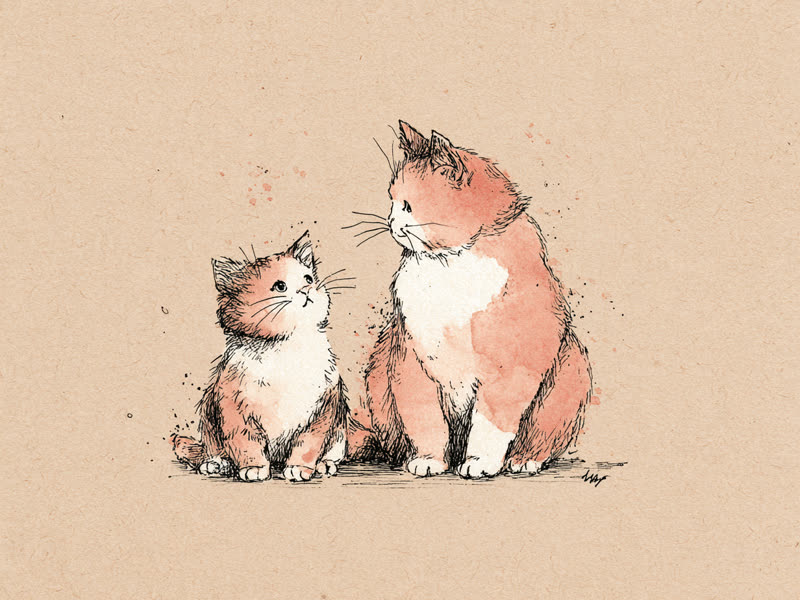
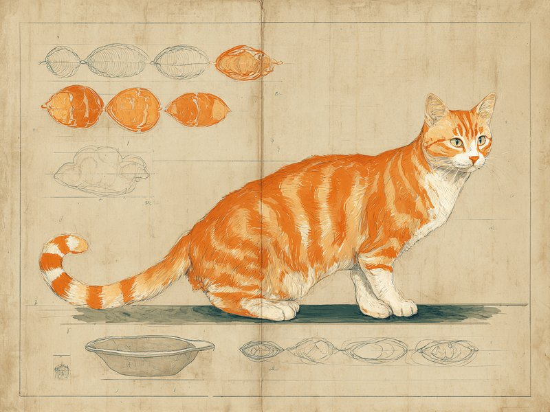
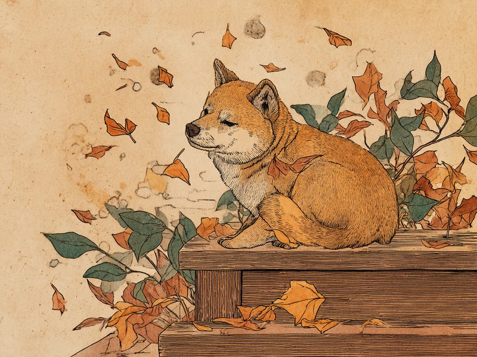
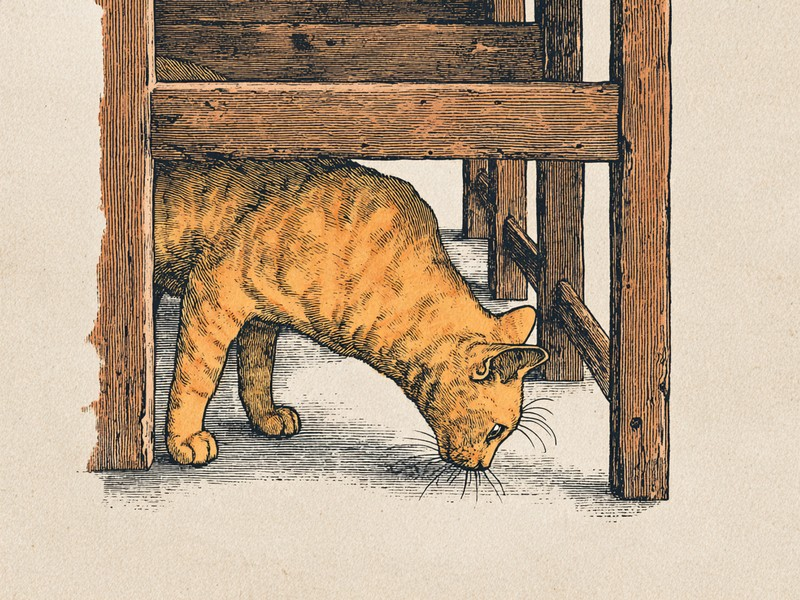
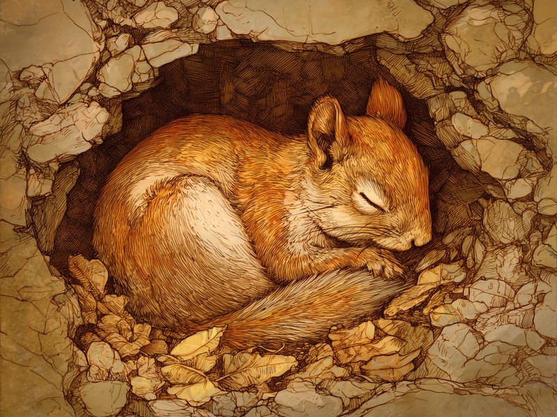
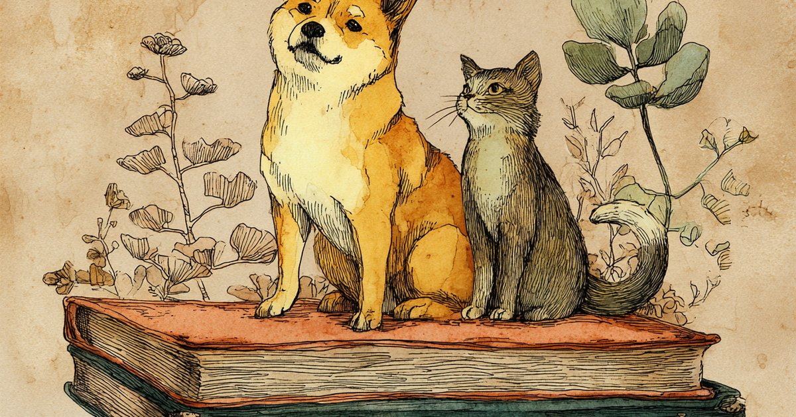

犬はなぜ人間より早く年をとるの?
子犬期の急成長と、体の大きさによる老化スピードの違いを解説します。

猫の年齢換算、1年目だけ「18歳」なのはなぜ?
早見表で1歳と2歳の伸び方が違って見える理由を解説します。

愛犬・愛猫の「標準体重」はどう決まる?
体重だけでなく体型で見る「ボディコンディションスコア」の考え方を紹介します。

うちの子、いつからシニア?犬猫の「高齢期」のはじまりサイン
体格別のシニア期の目安と、見逃しやすい5つの初期サインを解説します。

猫のしっぽが教えてくれること。動きでわかる7つの気持ち
ピンと立てる、ふくらませる、ゆっくり振るなど、7つの動きから読み解く猫の気持ちを解説します。

犬はなぜ鼻がこんなに良いの?
受容体の数の違いから、探知犬として活躍できる理由まで、犬の嗅覚の秘密を解説します。

猫はなぜゴロゴロ喉を鳴らすの?
甘えている時だけじゃない、ゴロゴロ音に隠された意外な役割を解説します。

犬や猫はなぜ秋にごっそり毛が抜けるの?
春と秋で目的が逆になる換毛の仕組みと、ダブルコート・シングルコートの違いを解説します。

猫はなぜ日照時間で恋の季節を知るの?
メラトニンが日の長さを伝える仕組みと、シカや犬との違いを解説します。
犬はなぜ人のあくびがうつるの?
東京大学の研究が明かした、飼い主との絆と共感のふしぎな関係を解説します。

猫はなぜヒゲで隙間の広さがわかるの?
顔まわりに円を描くヒゲと、根元の神経が作る高感度センサーを解説します。

猫はなぜ冬にコタツで丸くなるの?
高めの平熱・砂漠出身という進化の背景・低温やけどの注意点を解説します。

犬はなぜ夏に舌を出してハアハアするの?
汗腺が足の裏にしかない犬が、唾液の気化熱で体を冷やす仕組みを解説します。

犬や猫の花粉症は、なぜ鼻ではなく肌に出るの?
犬1995年・猫2000年ごろに確認された動物の花粉症と、症状が皮膚に出る理由を解説します。

冬眠する動物はなぜ春に目を覚ますの?
気温・日照・体内時計が重なって働く目覚めの仕組みと、クマの「本当は冬眠じゃない」謎を解説します。

犬や猫はなぜ秋になると食欲が増すの?
気温が下がると体は脂肪を燃やして熱をつくる、体温維持のための自然な仕組みを解説します。

エゾシカはなぜ秋に恋の季節を迎えるの? NEW
猫とは正反対、日が短くなる秋に動き出す「短日繁殖動物」の一年がかりの恋の準備を解説します。

都道府県別・犬の登録頭数ランキング! 人口あたりで一番多いのはどこ? NEW
厚労省・総務省の公式統計から算出した、人口あたりの犬密度ランキング47都道府県。1位は香川県という結果に。